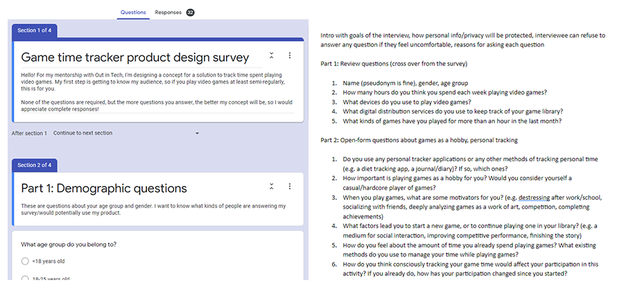
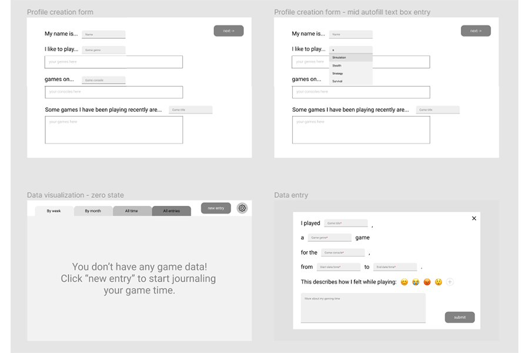

I designed a game time journaling web app for players to visualize their time spent playing video games.
| Role | Project manager, UX researcher, UX designer (solo project) |
| Duration | April to May 2021 (8 weeks) |
| Methods and tools | Surveys, interviews, wireframing, Figma, usability tests |
While part of the Out in Tech Mentorship Spring 2021 cohort, I designed a web app to collect and visualize personal data about time spent playing video games under the supervision of my mentor, Jonathan Corvin-Blackburn. Over the course of eight weeks, I:
- conducted generative research using surveys and interviews I designed myself,
- sketched out various ideas for web app features,
- wireframed my web app in Figma,
- conducted usability tests with members of my target audience, and
- implemented their feedback in a mid-fidelity prototype.
Research
The first step I took was to conduct generative research into what my target audience wanted. After all, an idea I might find useful might not be what other players like me need. I created a preliminary survey using Google Forms that received 32 responses and learned that:
- 87.5% of respondents played games on a personal computer,
- 90% of respondents used Steam to manage their digital games library,
- More than 50% of respondents did not consciously track the time they spent playing games,
- When asked about concerns related to using a journaling app, the vast majority of respondents expressed concern about forgetting to add entries to their virtual journal, compared with only about 23% of respondents who were concerned about their account security.
I also interviewed survey respondents who were interested in speaking further about their experiences, and learned that what they wanted to learn from a journaling app was different than what I had expected from other types of journaling apps. While I had focused solely on visualizing time spent in-game and comparing that between different titles or consoles, my interviewees wanted to use a journaling app to record their thoughts over periods of time, closer to a diary. They also wanted to use the journaling app to manage their gaming time and make sure they were not spending large amounts of time binge-playing games. The insights I discovered from both my surveys and interviews informed my design process when I began to ideate and sketch out key features for my web app.
Design
My initial sketches for data entry followed a more traditional form entry format, but I also explored a “storytelling” sentence completion data entry format like a “Mad Libs” worksheet. Based on the insight from my interviews where users were interested in using the web app like a diary, as well as my own desire to distance the web app from work, I tried to ideate features that were more playful and creative. I also sketched out in detail how data entry fields would autofill based on previous input or third-party database integration -- I wanted the form to autocomplete certain fields such as game titles or console names. Finally, I explored different ways to visualize the data including bar charts, pie charts, heat maps, and even emoji clouds (this was one I found the most playful and interesting to look at).
Next, I implemented my sketches and initial ideas in a low-fidelity wireframe on Figma. At this point in time, I was unconcerned about design aspects like fonts and color schemes -- I just wanted to show how each feature worked, and even annotated certain sections using red text. I was then able to conduct guided usability tests with survey respondents who expressed interest in returning for further interviewing. The most important improvements my testers asked for were:
- Customizing data visualization color schemes: This would not only help create a distinct color scheme for my web app, but also make the journaling app more personal (like a diary). I went on a color palette generator side and picked some nice-looking categorical color schemes for my graphs.
- Dark mode: One tester mentioned that they exclusively used dark mode on websites and apps that offered the alternate color scheme due to migraines they would get from looking at bright screens for extended periods of time. This also reminded me to keep accessibility in mind when designing my web app, so that all types of people can use my journaling website (not just the able-bodied).
- Font for dyslexic users: As above, testers expressed their desire for a dyslexia-friendly font that would make it easier to navigate large blocks of text. I looked into adding options for fonts like OpenDyslexic but also other dyslexia-friendly fonts like Comic Sans.
- More descriptive tracker entry titles: Before, I was saving game time entries only by the date and time they were entered. Testers noted that it would be very hard to keep track of distinct entries when the titles all looked the same. I added the title of the game played in the data entry title to make them more distinct but still follow an organized format, but in the future I might also explore ways to let users name the entries themselves.
- Customize types of data visualizations: I asked testers whether pie or bar charts helped them understand their game time more, but they all had different answers for which ones they found the most useful. I then realized that because every user might want to use a journaling app like this for a different reason (for example, to understand the types of games they tend to play v.s. managing their time spent gaming overall). In the future, I would iterate on different ways to allow users to choose the types of graphs they can view in the data visualization section of the web app.
You can view the mid-fidelity prototype here, as well as my mentorship graduation slides here.
What I learned
Over the course of this project, I learned three important lessons:
- Accessible data visualization: Initially, I was designing some more complicated types of data visualizations for my apps such as area charts and heat maps. However, I realized that the people I was testing my app with didn’t understand how to read these more advanced graphs and preferred simpler options like pie charts and bar charts. In my haste to prove my advanced knowledge of data visualization, I forgot that data visualizations are only useful when readers can interpret them. When visualizing data in the future, I need to remember to pick my graphs based on my target audience.
- A11y-centered design: My testers often mentioned the desire for options that would improve readability due to certain temporary and permanent disabilities. As a relatively able-bodied person, I had only thought to make sure I could interpret my own prototypes when creating them. In the future, I need to continue to add features that will help all types of users use my products, not just the able-bodied ones.
- Games should be fun: From various seminars and articles I watched and read on games user experience, the big difference between games and other types of software is that games should be fun to play. Throughout the course of this project, I tried to make sure that this games-adjacent product is fun to use, and that filling in the forms doesn’t feel like work. In fact, the biggest reason I abandoned the traditional form entry format was that it began to seem too close to clocking in at work. If users began to see gaming time journaling as a job, I would have failed in my responsibility to design a supplement product for gaming, a fun hobby. To that end, I added playful aspects like a “Mad Libs” data entry form, as well as an emoji selection screen to gauge sentiment over time. In the future, I would add even more playful components to this web app in order to make keeping track of playtime a fun activity in and of itself.